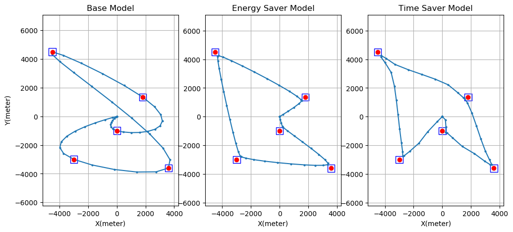

About Me
I am Huanran Li, a Ph.D. candidate in Electrical Engineering at the University of Wisconsin-Madison, advised by Professor Daniel Pimentel-Alarcón. My research journey in machine learning has been diverse and dynamic, initially focusing on general machine learning with a deep dive into subspace clustering, visualization, and high-rank matrix completion. This work has been recognized through prestigious awards like the best student paper at IVAPP 2023 and the Outstanding Poster Award at MMLS 2023 .
More recently, my focus has shifted toward deep learning, particularly in the areas of Contrastive Learning (CL) and Large Language Models (LLMs). In this pursuit, I have developed an innovative model that integrates self-attention mechanisms into the contrastive learning framework. This work demonstrates not only practical advancements but also significantly contributes to the theoretical understanding of how augmentation scale impacts learning outcomes in contrastive learning. As I move forward, my aim is to deepen my exploration in this area for my Ph.D. final thesis, primarily focusing on Contrastive Learning, Neural Collapse, and Transformers.
Education
-
Ph.D. in Electrical Engineering and Computer Science
Institution: University of Wisconsin-Madison
GPA: 3.908/4.0
Expected Graduation: May 2025 -
B.S. in Electrical Engineering and Computer Science (Honor)
Institution: University of Wisconsin-Madison
GPA: 3.90/4.0
Graduation Date: May 2020
Awards
- Best Student Paper Award: International Conference on Information Visualization Theory and Applications 2023
- Best Poster Award: Midwest Machine Learning Symposium 2023
- Gerald Holdridge TA Teaching Excellence Award Department of Electrical and Computer Engineering, UW-Madison 2023
- First Place of Faith Technologies Social Impact Prize EnerHack 2018 - Energy Home Assistant
- Second Place in Hackathon MadHacks 2018 - Voicoder, Code with Voice
- Diversity Prize in Hackathon MadHacks 2017
The paper, Visualizing Grassmannians via Poincare Embeddings, introduces an embedding to visualize high-dimensional Grassmannians on the Poincaré disk, obtained by minimizing the KL-divergence of the geodesics on each manifold. Its main theoretical result bounds the loss of our embedding by a log-factor of the number of subspaces, and a term that depends on the distribution of the subspaces in the Grassmannian. It provides both synthetic and real data experiments showing that the embedding can provide a more accurate visualization of Grassmannians than existing representations.

Developed with Python on Amazon Web Services (AWS), this innovative project plays a pivotal role in home energy conservation. It features an advanced server system designed to facilitate communication between an energy station and various electrical devices. The server processes tasks on the cloud, responding efficiently to human voice inputs via Echo. This system not only monitors and controls household electrical devices but also proactively issues warnings about potential energy wastage. It incorporates user-centric features such as seeking permission for turning off lights and providing detailed reports on energy usage, thereby promoting sustainable living practices.
Voicoder, powered by Dialogflow and Google Assistant, revolutionizes code interaction by transforming voice instructions into executable code simulations. This innovative tool, developed in JavaScript, is adept at interpreting commands from Google Assistant, constructing code that encompasses loops, conditional statements, print operations, general mathematics, and array manipulations.
Voicoder was conceived with dual objectives: firstly, to empower individuals with typing disabilities by enabling voice-based coding, and secondly, to make learning programming more engaging and accessible for children. By verbally interacting with the Google Assistant, users can perform complex coding operations, and the system further enhances the learning experience by vocalizing the outcomes with a machine-generated voice.
Professional Experience
-
Graduate Research Assistant at UW-Madison
Duration: Jan 2021 - Present
Key Areas: Deep learning, subspace clustering, missing data handling, dimensionality reduction
Key Responsibilities: Conducting comprehensive literature reviews and analysis in key areas. Designing and executing experiments to evaluate machine learning models, deriving theoretical insights and results for successful models, and authoring high-quality research papers for conferences.
Publications
-
Group-Sparse Subspace Clustering with Elastic Stars
H Li, D Pimentel-AlarcónPublications:- Conference: IEEE International Symposium on Information Theory (ISIT 2024)
Abstract: This paper tackles the over-sparsification issue in Sparse Subspace Clustering (SSC), pivotal in high-dimensional data analysis. We introduce 'Elastic Stars' (ES), a novel sparsity regularization approach, blending sparsity with connectivity in clusters. ES ensures balanced representation by minimizing the distance between variables and evolving centroids, including a zero centroid. Additionally, we incorporate an L2 norm penalty to reduce noise and outliers. Despite the challenges posed by its non-convexity, we present an effective ADMM-based optimization tailored for SSC with ES, yielding significant improvements in clustering accuracy over existing methods.
Keywords: Sparse Subspace Clustering, Group-Sparse Regularization, High-Dimensional Data, L1-Norm Penalty, L2-Norm Penalty, ADMM Optimization, Clustering
Links: available soon.
-
Fusion over the Grassmannian for High-Rank Matrix Completion
JS Johnson, H Li, C Gan, Z Lu, M Malloy, DL Pimentel-AlarcónPublications:- Conference: IEEE International Symposium on Information Theory (ISIT 2024)
Abstract: This paper introduces a novel approach for clustering incomplete vectors by using subspaces within the Grassmannian geometry. Our algorithm clusters and completes data in a union of subspaces without needing prior knowledge of subspace numbers. It efficiently handles noise and requires only an upper bound on subspace dimensions. The paper also covers practical aspects like model selection and sketching techniques, supported by synthetic and real-data experiments to validate the approach.
Keywords: Grassmann Manifold, Incomplete-Data Clustering, Subspace Clustering, Data Completion, Noise Handling, Dimensionality Analysis, Model Selection, Algorithmic Convergence
Links: available soon.
-
Visualizing Grassmannians via Poincare Embeddings
H Li, D Pimentel-AlarcónPublications:- Conference: Information Visualization Theory and Application (IVAPP2023)
- Journal: SN Computer Science
- Poster: Midwest Machine Learning Symposium (MMLS2023)
Abstract: This paper presents a novel method to visualize high-dimensional Grassmannians on the Poincaré disk. The technique optimizes the representation of the Grassmannian geometry by minimizing KL-divergence in the construction of affinity matrices. A significant theoretical contribution includes bounding the embedding loss, offering insights into the structure of subspaces. Our experimental results validate the method's effectiveness in providing more accurate visualizations of Grassmannians than traditional approaches.
Keywords: Grassmannian, Manifold Learning, Poincaré Disk, t-SNE, High-Dimensional Data, Dimensionality Reduction
Links: Conference Paper, Journal Paper, Poster, Code
-
Minimum-Length Trace Reconstruction via Integer Programming
H Li, D Pimentel-AlarcónPublications:- Conference: Allerton Conference 2022
Abstract: This paper offers a novel Integer Programming approach to the trace-reconstruction problem, focusing on efficiently identifying the shortest sequence that aligns with independently sampled subsequences. We enhanced optimization through valid inequalities and demonstrated significant speed and efficiency improvements over traditional depth-first search methods in our experiments.
Keywords: Integer Programming, Trace Reconstruction, Algorithm Efficiency, Optimization, Subsequence Sampling, Sequence Analysis
Links: Conference Paper, Code
- Conference: Allerton Conference 2022
-
TransFusion: Contrastive Learning with Transformers
H Li, D Pimentel-AlarcónPublications: Currently under reviewing processAbstract: TransFusion introduces a transformative approach to contrastive learning, reimagining attention mechanisms for deeper analytical insights and heightened explainability. By redefining conventional components within the learning process, it strategically aligns the model's output with class-specific affinities, pioneering a path to a more nuanced understanding of augmentation limits and batch size requirements. This framework paves the way for superior feature discernment, crucially enhancing data clustering and classification outcomes in complex scenarios.
Keywords: Contrastive Learning, Transformer, Jensen-Shannon Divergence, Data Augmentation, Feature Extraction, Cluster Analysis
Links: Paper
-
Contrastive Learning with Orthonormal Anchors (CLOA)
H Li, D Pimentel-AlarcónPublications: Currently under reviewing processAbstract: This study unveils the 'over-fusion' phenomenon in contrastive learning, where embeddings tend to converge detrimentally, impacting classification accuracy. Focusing on the InfoNCE loss function, we propose the Orthonormal Anchor Regression Loss (OAR) as a novel solution. OAR effectively disentangles embedding clusters, fostering distinctiveness and dense cluster aggregation. Demonstrating significant improvements with minimal labeling, our method shines in enhancing classification on CIFAR10 and CIFAR100 datasets, challenging conventional approaches in the field.
Keywords: Contrastive Learning, InfoNCE Loss, Embedding Clusters, Semi-Supervised Learning
Links: Paper
Projects
-
Movie Rating Prediction Based on Matrix Completion
Machine Learning Honor Project, 2019Description: This project entailed training machine learning models on a dataset comprising over 20 million movie ratings and tagging activities dating back to 1995. The methods implemented encompass a range of advanced techniques, including Singular Value Decomposition (SVD), Principal Component Analysis (PCA), and various regression models such as Least Square, Gaussian Kernel, and Ridge Regression. Additionally, we integrated Truncated SVD Regularization to enhance the model's prediction accuracy and robustness, aiming to refine the algorithm's effectiveness in dealing with large-scale movie rating data.
Links: Report & Code
-
UPDATO - UAV Package Delivery And Trajectory Optimization
Electrical Engineering Capstone Design, 2018Description:The UPDATO project concentrated on enhancing the routing efficiency of Unmanned Aerial Vehicles (UAVs) for package delivery, with an emphasis on optimizing routes to multiple locations while carefully considering both energy and time costs. Our approach involved developing versatile models capable of optimizing UAV routing based on various factors such as time, energy, or a balanced consideration of both. These models were adept at factoring in environmental variables like wind conditions and terrain elevation to further refine their effectiveness. To accomplish this, we implemented a sophisticated Feedback Control System and applied solutions to the Traveling Salesman Problem. The project's technical backbone was established through programming in Julia, complemented by the use of Gurobi for model solving, thereby crafting a more efficient and responsive UAV delivery system.
Links: Report & Code
- Energy Home Assistant EnerHack 2018
- Voicoder - Code with Voice MadHacks 2018
Developed with Python on Amazon Web Services (AWS), this innovative project plays a pivotal role in home energy conservation. It features an advanced server system designed to facilitate communication between an energy station and various electrical devices. The server processes tasks on the cloud, responding efficiently to human voice inputs via Echo. This system not only monitors and controls household electrical devices but also proactively issues warnings about potential energy wastage. It incorporates user-centric features such as seeking permission for turning off lights and providing detailed reports on energy usage, thereby promoting sustainable living practices.
Voicoder, powered by Dialogflow and Google Assistant, revolutionizes code interaction by transforming voice instructions into executable code simulations. This innovative tool, developed in JavaScript, is adept at interpreting commands from Google Assistant, constructing code that encompasses loops, conditional statements, print operations, general mathematics, and array manipulations.
Voicoder was conceived with dual objectives: firstly, to empower individuals with typing disabilities by enabling voice-based coding, and secondly, to make learning programming more engaging and accessible for children. By verbally interacting with the Google Assistant, users can perform complex coding operations, and the system further enhances the learning experience by vocalizing the outcomes with a machine-generated voice.
Links: Code
Contact
I am always open to exploring collaboration opportunities. If you're interested in discussing potential collaborations or projects, please don't hesitate to get in touch.
Email: hli488@wisc.edu